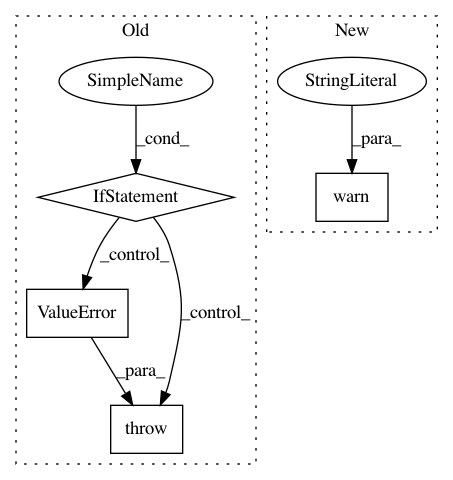

f998c6334501d4724ded875aea04cd8bef4c6c6a,skimage/color/colorconv.py,,guess_spatial_dimensions,#,59
Before Change
return 2
if image.ndim == 3 and image.shape[-1] != 3:
return 3
if image.ndim == 3 and image.shape[-1] == 3:
return None
if image.ndim == 4 and image.shape[-1] == 3:
return 3
else:
raise ValueError("Expected 2D, 3D, or 4D array, got %iD." % image.ndim)
def convert_colorspace(arr, fromspace, tospace):
Convert an image array to a new color space.
After Change
If the image array has less than two or more than four dimensions.
from ..filters import _guess_spatial_dimensions
warn("This function is deprecated and will be removed in 0.18", stacklevel=2)
return _guess_spatial_dimensions(image)
def convert_colorspace(arr, fromspace, tospace):
In pattern: SUPERPATTERN
Frequency: 3
Non-data size: 4
Instances
Project Name: scikit-image/scikit-image
Commit Name: f998c6334501d4724ded875aea04cd8bef4c6c6a
Time: 2019-07-22
Author: fboulogne@sciunto.org
File Name: skimage/color/colorconv.py
Class Name:
Method Name: guess_spatial_dimensions
Project Name: astroML/astroML
Commit Name: dcd7ce51473d875401d39cd0bc1c3c1cdc2023e1
Time: 2015-05-08
Author: ajc.atwork@gmail.com
File Name: astroML/resample.py
Class Name:
Method Name: bootstrap
Project Name: scikit-image/scikit-image
Commit Name: b46a4961157510eb395028cd9b6cf8739cedb7c2
Time: 2020-01-23
Author: rfezzani@gmail.com
File Name: skimage/filters/ridges.py
Class Name:
Method Name: sato